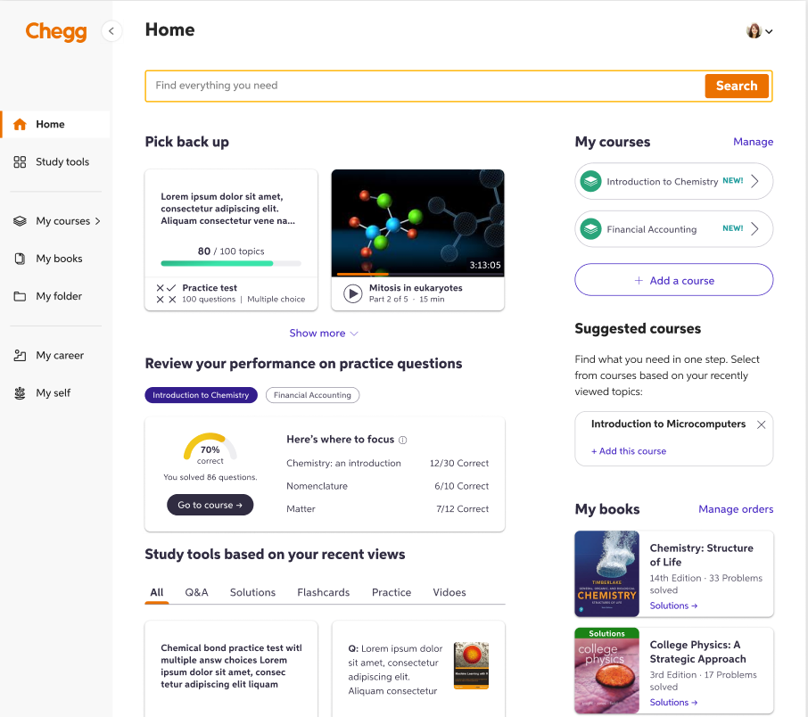
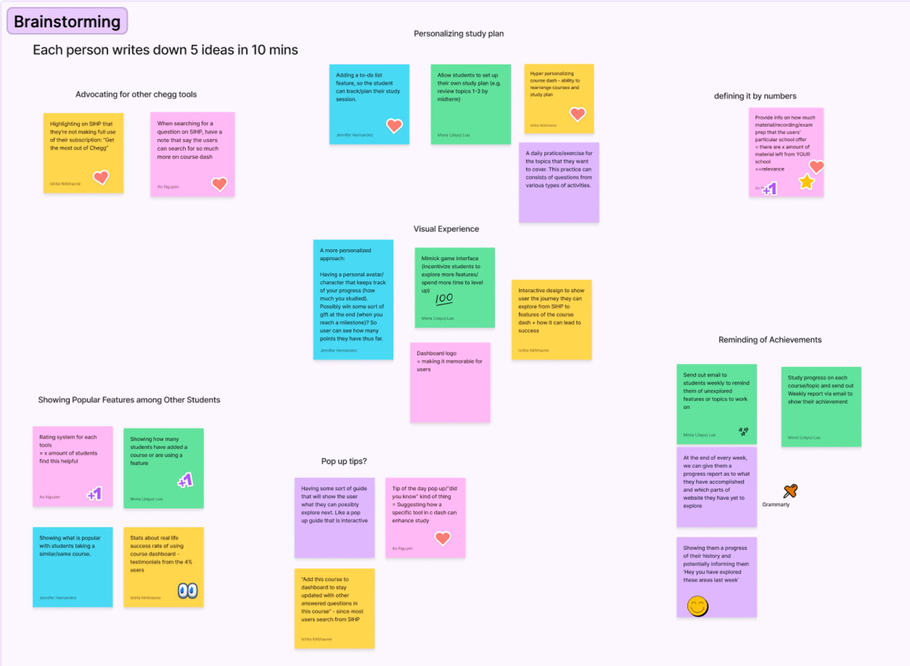
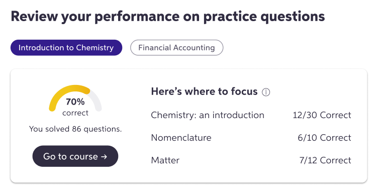
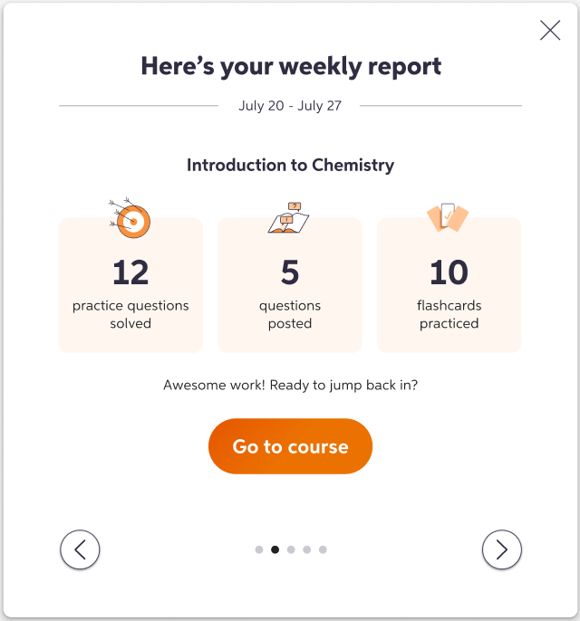

Context
As Chegg grew as a company, they launched a 'Course Dashboard' that can be accessed from the home page when a user is signed in. This dashboard allows paid subscribers to add courses, access instructor-made documents, save related textbooks, post questions, practice flashcards and more. In an effort to create more value for paid subscribers, Chegg introduced new features to the course dashboard.
Objectives
- Design the new modules on the course dashboard
- Achieve optimal information hierarchy for the newly added modules
- Ensure discoverability and create tangible value for students
- Increase repeat visits to the course dashboard and potentially increase number of paid users
Challenges
- Work with limited real estate on the course dashboard page
- Create an engaging experience that is also easy to follow
The team
- 2 product managers
- 1 UX researcher
- 1 product designer
- 1 content designer
- 3 developers
My role
Lead the content design and co-lead the overall UX strategy for the entire project. Align cross-functional collaborators and get timely feedback on each iteration. Balance user and product needs in every step of the way.
The process

Discovery & research
Conducted user interviews, analyzed previous usage data, and performed competitive analysis to understand pain points and opportunities.
Brainstorm & ideation
Facilitated design workshops with stakeholders, created user journey maps, and developed multiple concept directions based on research insights.
Prototyping & Testing
Built interactive prototypes wwith polished content and conducted moderated usability tests with students to validate design and content decisions and iterate on solutions.
Implementation & Launch
Collaborated with engineering on technical specifications, created design documentation, and monitored post-launch metrics to measure success.
Final state
The redesigned study tools launched with a 32% increase in daily active users and 45% improvement in study session completion rates. The new design system was adopted across three additional product areas, and user satisfaction scores increased by 28%.

